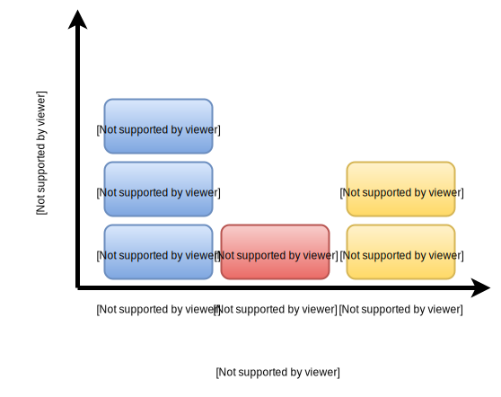

The Twelve-Factor App
Build Modern, Saclable Web Apps
Agenda
- Background
- The Twelve Factors
- Question Time!
Background
Origin
Written in November, 2011 by Adam Wiggins, co-founder of Heroku
Written as a methodology to:
- Avoid common pitfalls when building cloud based SaaS apps
- Help people build apps that will work optimally on Heroku and other PaaS offerings
What kind of app does it encourage
Apps that:
- Use declarative formats for setup automation, to minimize time and cost for new developers joining the project
- Have a clean contract with the underlying operating system, offering maximum portability between execution environments
What kind of app does it encourage
- Are suitable for deployment on modern cloud platforms, obviating the need for servers and systems administration
- Minimize divergence between development and production, enabling continuous deployment for maximum agility
- And can scale up without significant changes to tooling, architecture, or development practices
Programming Language?
Nope.
The Twelve-Factor App is language, platform, and toolset agnostic!
The Twelve Factors
Finally! Why we're all here!
I. Codebase
One codebase tracked in revision control, many deploys
One Codebase
A twelve-factor app relates one-to-one with a single code base
Multiple code bases == Distributed System
Each app in a distributed system is a tewlve-factor app
... with it's own codebase
Tracked In Revision Control
Code base MUST be tracked in reversion control
Allows for collaborative development
Recommend git but any revision control will do
Many Deploys
Each running instance is a deploy
Might have dev, test, and production deploys
Each running instance on a developer's machine is a deploy
Code base for each deploy is the same, but probably different versions and configuration
Many Deploys

Why?
Helps new developers become familiar by having single source
Eliminates compliations with dependencies on other source code
Deploys are easy because you just need one source repo
All the benefits of a revision control system
II. Dependencies
Explicitly declare and isolate dependencies
Explicitly Declare Dependencies
Most programming languages have some sort of package manager
CPAN for perl, PyPI for python, npm for node.js, etc.
A twelve-factor app has dependencies (including version) declared in a dependency manifest
Isolate Dependencies
A twelve-factor app never relies on implicit existence of system-wide packages
Use a dependency isolation tool to ensure no leak
Vendor or bundle dependencies locally with the app
This includes "system" tools, don't expect curl to be installed everywhere!
Why?
Helps new developers because all they need is:
- Language runtime
- Dependency manager
Everything is set up with a declarative build command
III. Config
Store Config In The Environment
What Is Config?
An app’s config is everything that is likely to vary between deploys
For example:
- Resource handles to backing services
- Credentials and secrets to external services
- Per-deploy values such as canonical hostname
Where Not To Store Config
A twelve-factor App never stores any config in the code base
Protip: If you can open source the codebase at any time and not comprimise yourself, you're probably good!
A (Slightly) Better Solution
Unversioned config file
- + Outside of reversion control
- - Difficult to manage multiple deploy targets
- - Easy to accidentally commit to revision control
Best Solution
Store config in environment variables
- + Outside of reversion control
- + Set at deploy time based on deploy target
- + Secure to the user of the running process
- + Language and OS agnostic
But how do you manage the config?
Addendum
The Twelve-Factor App doesn't talk much about this point
If you can't store secrets in version control, where do you store them?
Seperate secure/encrypted "vault" like 1password or truecrypt?
Tool to securely manage keys and config like ansible-vault or Hashicorp Vault?
Why?
Security
Scalability
Separation of deploy targets config
IV. Backing Services
Treat backing services as attached resources
Backing Service
A backing service is any service the app consumes over a network
- Database
- Caching service
- Queuing services
- SMTP services
Local vs. Remote
A twelve-factor app makes no distinction of local, remote, or third-party services
It treats all the same and accesses them using a URI specified in config
Should be able to swap out services without any code changes
Why?
Makes managing multiple deploy targets or environment easier
Hot-swapping of services without code change
e.g. A database gets corrupted, spin up new one based on backup, swap with config change
V. Build, release, run
Strictly separate build and run stages
Deploy
A non-production deploy is created in three separate stages
Build
Transforms a code base into an executable
Compilation of binaries and assets
Vendoring of dependencies
Bundles together into a build
Release
Combines build with config for the deploy target into a release
Resulting release is ready for execution on target
Run
Runs the app in the execution environment on the target
Launches the release as a set of processes
Strict Separation
The twelve-factor app uses strict separation between the build, release, and run stages
Can't change code at runtime or release time
Release Management
Sort of an aside to The Twelve-Factor App
Some build tools manage releases
Releases are tagged with incrementing version number or timestamp
Current release is symlinked, rollback is easy, just change symlink
Build vs. Runtime
Builds are done by DevOps performing the deploy
Runtime execution can happen automatically after a reboot or when a process manager restarts after a crash
Runtime should therefore be as simple as possible, while builds can be more complex
Why?
Improved uptime by:
- Separation of steps == consistency
- Easy rollback to previous version
- Simple runtime steps ensure easy restarts in the middle of the night
VI. Processes
Execute the app as one or more stateless processes
Unix Process Model
An app runs in an environment as one or more managed processes
Managed processes: Start at bootup, restart automatically when needed
Can use things like upstart, init, foreman, etc.
Stateless
App processes are stateless and share nothing
All persistent data should be stored in a backing service
Memory space and filesystem can act as single transaction cache
Sticky Sessions
Some apps use sticky sessions
Sticky sessions break twelve-factor and should not be used
Any session data should be in backing service with data expiry
Why?
Allows scalability and composability since processes are stateless
VII. Port binding
Export services via port binding
Completely Self Contained
A twelve-factor app is not run inside a web server container
A twelve-factor app exports HTTP as a service by binding to a port
Dependency Injection
Use declaritive dependency injection include a web server library
Done in user space inside the app
Backing Services
By binding to ports, the app can be a backing service for another app
Just specify url and port in configuration to chain together
Any protocol can be exported via port binding, not just HTTP
Why?
Composability
Each app is a separate self containted entity
We can compose a larger app by using other apps as backing services
VIII. Concurrency
Scale out via the process model
Unix Process Model
Thanks to factors VI and VII scaling should be easy
Processes are independent and composable
Architect for diverse workloads using process types
Shouldn't self daemonize, use OS process manager
Scaling Up And Out!
Add processes to increase concurrency
Add process types to increase process diversity
Add machines to scale horizontally
IX. Disposability
Maximize robustness with fast startup and graceful shutdown
Processes Are Disposable
Should minimize startup time
Can be started, stopped or restarted at a moments notice
Helps with scaling, config changes, and fast deploys
Process manager handles all of this for you
Graceful Shutdown
Processes should gracefully shutdown on SIGTERM from process manager
Web Processes
Graceful shutdown means:
- Stops listening to port
- Finishes current requests
- Shutdown
Worker Processes
Graceful shutdown means:
- Stops accepting jobs
- Returns current job to job queue
- Locks are released
- Shutdown
Robust to Sudden Death
Getting SIGTERM is optimal, but process may die in case of hardware failure
In this case application should handle non-graceful terminations
Can use robust job queue that automatically returns jobs after disconnect or timeout
Why?
Servers in the cloud are super disposable
Likelihood of failure is high, risk of failure should be low
Auto scaling up and down, and reconfiguration is easy when processes are disposable
X. Dev/prod parity
Keep development, staging, and production as similar as possible
Three Gaps
Historical development gapped between dev and prod
This prevented Continuous Deployment
- Time Gap: Long time for dev -> prod
- Personnel Gap: devs write, ops deploy
- Tools Gap: local stack vs. prod stack
Continuous Deployment
Keep the gaps small!
- Deploy code quickly
- Developers also deploy and manage
- Identical tools in dev and prod
Backing Services
Adapters for backing services can be useful
Adapters help with porting to different services easier
Don't rely on adapters for dev/prod parity
Why?
Keeping the gap between dev and prod small enables continuous deployment
Features are released, bugs are found, and fixes are made faster
XI. Logs
Treat logs as event streams
Output stream
A twelve-factor app should write directly to stdout
Event stream is one event per line in text format
App isn't concerned with routing or storage
Handling the Stream
Execution environment handles the event stream from the process
In development, dev watches stdout in terminal
In production, logs are captured by environment and written to file
Advanced Log Management
Logs can be piped to log indexing and analysis system
Splunk and SumoLogic are examples
Powerful analysis tools can show usage trends, common exceptions, and alert in special circumstances
Why?
Good separation of concerns
App is bogged down with managing log streams
Enables use of powerful logging tools
Increases portability of app because environment handles the logs
XII. Admin processes
Run admin/management tasks as one-off processes
Admin Work
Normal app business happens in the process formation set up by process manager
DevOps might want to run admin or maintenance like:
- DB migration
- Run a REPL to inspect the app and environment
- Run a one-time script
Environment
Admin processes should be run like other processes:
- Committed and bundled into release
- Run inside dependency isolation
Twelve-Factor favours languages with a REPL which make admin easier
Why?
Separate admin work from app increases reliability of app processes
Bundling with release and isolating dependencies help ensure admin processes work everywhere the same
Recap
| I. Codebase | VII. Port Binding |
| II. Dependencies | VIII. Concurrency |
| III. Config | IX. Disposability |
| IV. Backing Services | X. Dev/Prod Parity |
| V. Build, Release, Run | XI. Logs |
| VI. Processes | XII. Admin Processes |
Questions?
Thanks!
This talk is available at noseworthy.github.io